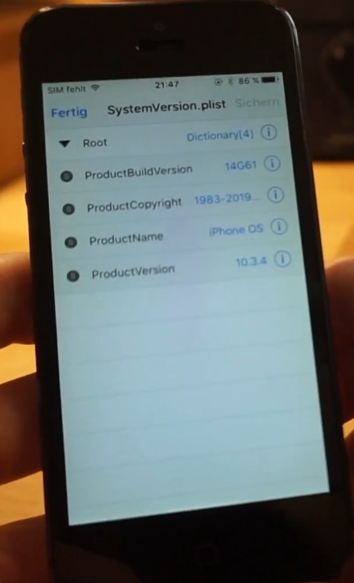
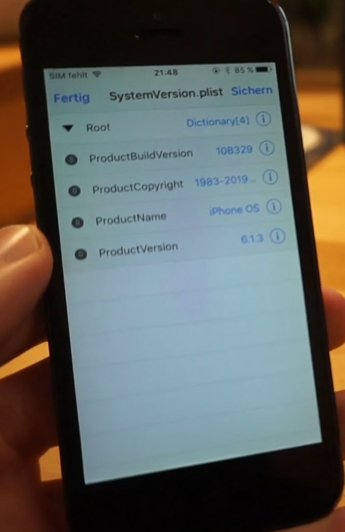
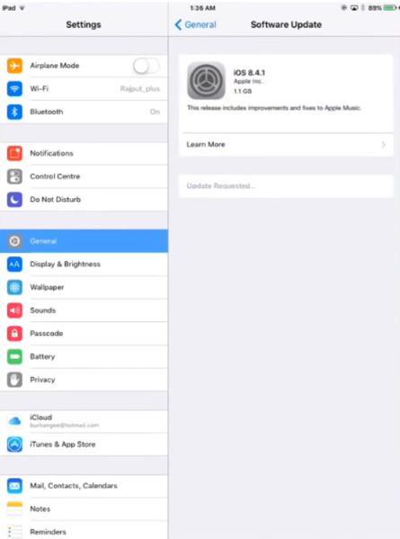
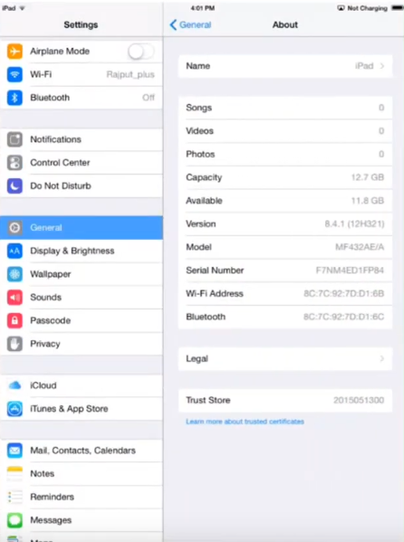

The 32-bit iOS downgrade guide
The following is an assortment of methods to OTA downgrade your iOS device, I won't be covering downgrading with SHSH blobs as that is pretty self-explanatory with tools like
FutureRestore GUI.
The plist method
There are tweaks that will modify these values for you, but it's not rocket science to do it yourself using Filza.
As such, that's what I'll be covering here.
Requirements:
- One of the supported devices on iOS 10 or 9
- jailbreak
- Cydia and file manager (iFile, Filza) installed
Supported devices:
- iPad 2 WiFi (iPad2,1)
- iPad 2 GSM (iPad2,2)
- iPad 2 CDMA (iPad2,3)
- iPad 2 Mid-2012 (iPad2,4)
- iPad mini 1st generation WiFi (iPad2,5)
- iPad mini 1st generation GSM (iPad2,6)
- iPad mini 1st generation Global (iPad2,7)
- iPad 3 WiFi (iPad3,1)
- iPad 3 CDMA (iPad3,2)
- iPad 3 GSM (iPad3,3)
- iPad 4 WiFi (iPad3,4)
- iPad 4 GSM (iPad3,5)
- iPad 4 Global (iPad3,6)
- iPhone 4S (iPhone4,1)
- iPhone 5 GSM (iPhone5,1)
- iPhone 5 Global (iPhone5,2)
- iPod Touch 5th generation (iPod5,1)
This method will allow you to downgrade your device to iOS 8.4.1.
Step 1: Modifying the plist
The particular plist you are looking for is /System/Library/CoreServices/SystemVersion.plist, navigate to it in Filza and open it.

Within this file, you want to modify ProductVersion and ProductBuildVersion values to reflect iOS 6.0 or 6.1.3, it doesn't matter.

You can find these values by looking up your device on ipsw.me and looking at the available versions.
The number goes into ProductVersion and the hexadecimal number in brackets goes into ProductBuildVersion.
Step 2: Installing iOS 8.4.1
Save your modified plist and reboot the device.
After the reboot, navigate into Settings, General, Software Update. After a short while, you should get the option to install iOS 8.4.1.

Hit Download and install, wait for it to finish. After the device is done "updating", make sure to navigate to Settings, General, Reset and hit Erase all content and settings.

OdysseusOTA2
OdysseusOTA2 is a set of tools that will allow you to OTA downgrade much like OdysseusOTA except it'll install iOS 8.4.1 instead of 6.1.3.
Requirements:
- Supported device running iOS 10 or 9
- jailbreak
- OpenSSH installed
- Mac or Linux computer
Supported devices:
- iPad 2 WiFi (iPad2,1)
- iPad 2 GSM (iPad2,2)
- iPad 2 CDMA (iPad2,3)
- iPad 2 Mid-2012 (iPad2,4)
- iPad mini 1st generation WiFi (iPad2,5)
- iPad mini 1st generation GSM (iPad2,6)
- iPad mini 1st generation Global (iPad2,7)
- iPad 3 WiFi (iPad3,1)
- iPad 3 CDMA (iPad3,2)
- iPad 3 GSM (iPad3,3)
- iPad 4 WiFi (iPad3,4)
- iPad 4 GSM (iPad3,5)
- iPad 4 Global (iPad3,6)
- iPhone 4S (iPhone4,1)
- iPhone 5 GSM (iPhone5,1)
- iPhone 5 Global (iPhone5,2)
- iPod Touch 5th generation (iPod5,1)
Step 1: acquiring OdysseusOTA2, the firmware bundles and an IPSW
Download OdysseusOTA2 (check the video description), the IPSW and the appropriate firmware bundle for your device.
Step 2: Building your downgrade IPSW
Building your downgrade IPSW is gonna be much of the same process as with OdysseusOTA, nevertheless:
1: move the iOS 8.4.1 IPSW to either the macos or linux directory in your OdysseusOTA2 folder, depending on your OS.
1.5: move the folder within the firmware bundle zip for your device into the FirmwareBundles directory corresponding to your OS, unless you have an iPhone 4S or iPhone 5 - these have their firmware bundle included.
2: open a terminal in the directory and run the command: ./ipsw [iOS IPSW] downgrade.ipsw
2.5: if you have a GSM or CDMA device, make sure to append -bbupdate at the end of the command, if you don't you won't be able to activate the device.
3: connect your device to your Mac or PC, make sure you have usbmuxd installed on Linux and make sure it's running, then run the following command: ./idevicerestore -t downgrade.ipsw - This command will request an SHSH blob for the restore later.
4: get the pwned iBSS from the IPSW using this command: ./xpwn `unzip -j downgrade.ipsw 'Firmware/dfu/iBSS*' | awk '/inflating/{print $2}'` pwnediBSS
5: copy the pwned iBSS and kloader to your device over SSH: scp pwnediBSS ../kloader root@[IP of device]: - don't forget the : at the end. Default root password is alpine.
Step 3: initiating the downgrade
1: SSH into the device: ssh root@[IP of device], password: alpine
2: put your device into kDFU mode: ./kloader pwnediBSS
3: open a new terminal in the OdysseusOTA2/macos or linux directory, run the command: ./idevicerestore -w downgrade.ipsw
This will take a while, but once it's done, you'll be on iOS 8.4.1.
Now I have covered both methods of downgrading to 8.4.1, I will cover iOS 6.1.3 next, and there is really only one method these days, Apple used to sign iOS 6.1.3 IPSWs, however they haven't done that since iOS 9.3.6 released.
That method is:
OdysseusOTA
Requirements:
- Supported device on iOS 9 or 8
- jailbreak
- OpenSSH installed
- Mac or Linux computer
Supported devices:
- iPad 2 WiFi (iPad2,1)
- iPad 2 GSM (iPad2,2)
- iPad 2 CDMA (iPad2,3)
- iPhone 4S (iPhone4,1)
The iPad 2 Mid-2012 (iPad2,4) is not supported. If your iPad 2 is WiFi only and 16 GB, there is a chance it's an iPad2,4, otherwise you probably have a supported iPad.
Step 1: acquiring OdysseusOTA and an IPSW
Download OdysseusOTA (check the video description) and the IPSW.
Step 2: Building your downgrade IPSW
Building your downgrade IPSW is gonna be much of the same process as with OdysseusOTA2, nevertheless:
1: move the iOS 6.1.3 IPSW to either the macos or linux directory in your OdysseusOTA folder, depending on your OS.
2: open a terminal in the directory and run the command: ./ipsw [iOS IPSW] downgrade.ipsw
2.5: if you have a GSM or CDMA device, make sure to append -bbupdate at the end of the command, if you don't you won't be able to activate the device.
3: connect your device to your Mac or PC, make sure you have usbmuxd installed on Linux and make sure it's running, then run the following command: ./idevicerestore -t downgrade.ipsw - This command will request an SHSH blob for the restore later.
4: get the pwned iBSS from the IPSW using this command: ./xpwn `unzip -j downgrade.ipsw 'Firmware/dfu/iBSS*' | awk '/inflating/{print $2}'` pwnediBSS
5: copy the pwned iBSS and kloader to your device over SSH: scp pwnediBSS ../kloader root@[IP of device]: - don't forget the : at the end. Default root password is alpine.
Step 3: initiating the downgrade
1: SSH into the device: ssh root@[IP of device], password: alpine
2: put your device into kDFU mode: ./kloader pwnediBSS
3: open a new terminal in the OdysseusOTA/macos or linux directory, run the command: ./idevicerestore -w downgrade.ipsw
This will take a while, but once it's done, you'll be on iOS 6.1.3.
The keen-eyed among you will notice I just copypasted the OdysseusOTA2 steps, however they are simply the same procedure, why wouldn't I?